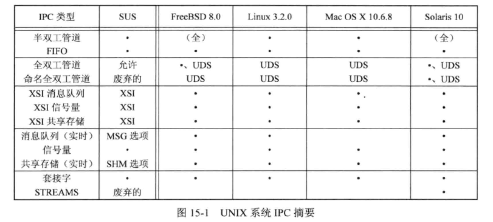
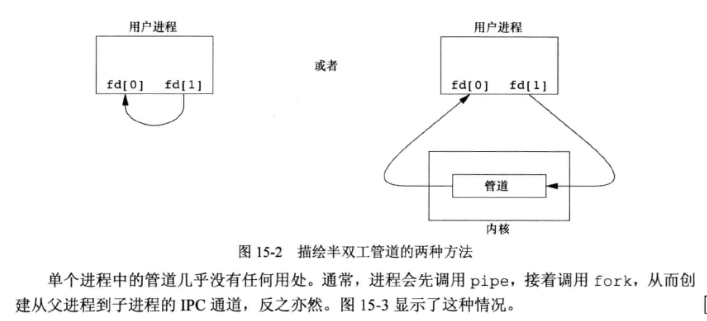
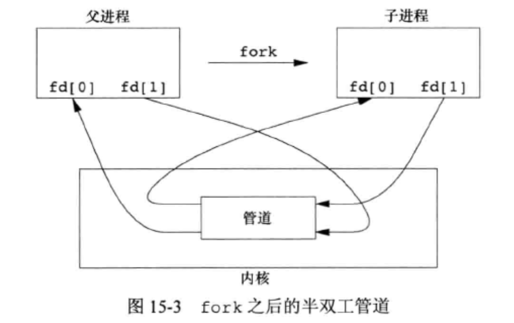
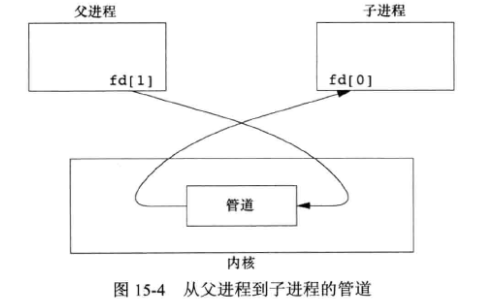
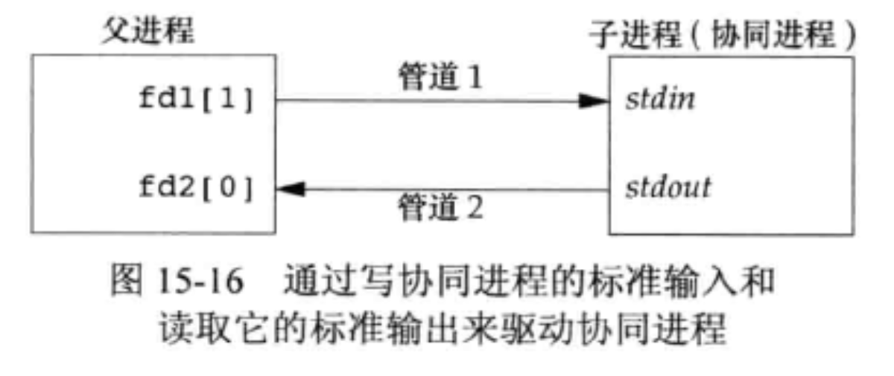
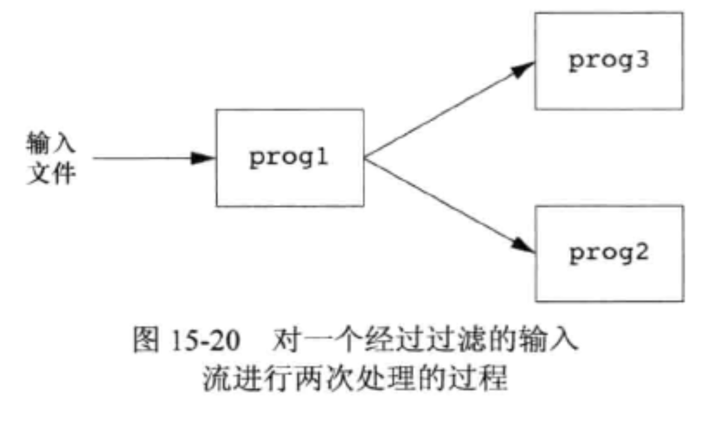
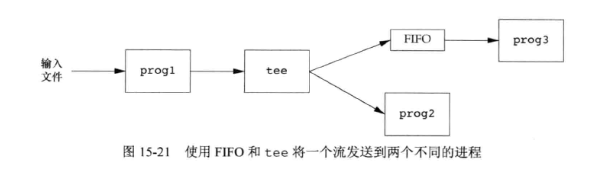
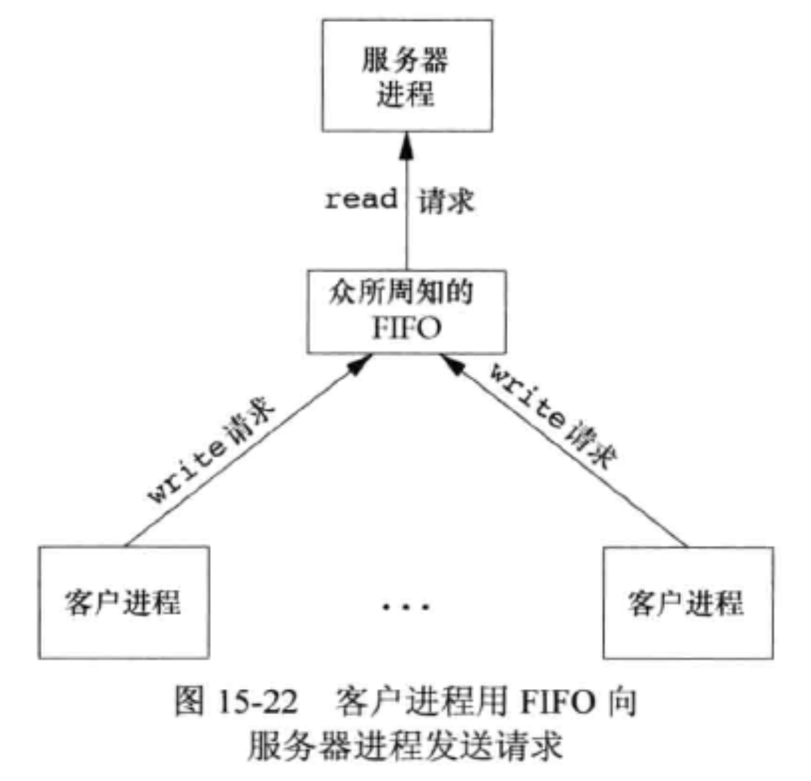
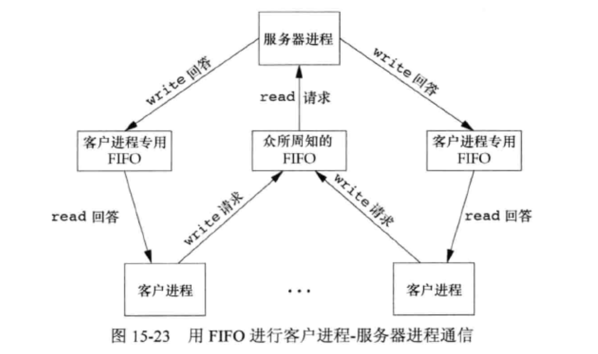

<!DOCTYPE html>
<html lang="en">

<head>
  <meta charset="utf-8" />
   
  <meta name="keywords" content="生活,旅行,思考,代码,博客" />
   
  <meta name="description" content="一座孤岛" />
  
  <meta name="viewport" content="width=device-width, initial-scale=1, maximum-scale=1" />
  <title>
    《APUE》ch15——进程间通信 |  akaQin&#39;s Blog
  </title>
  <meta name="generator" content="hexo-theme-yilia-plus">
  
  <link rel="shortcut icon" href="/favicon.ico" />
  
  
<link rel="stylesheet" href="/css/style.css">

  
<script src="/js/pace.min.js"></script>


  

  

<link rel="alternate" href="/atom.xml" title="akaQin's Blog" type="application/atom+xml">
</head>

</html>

<body>
  <div id="app">
    <main class="content">
      <section class="outer">
  <article id="post-《APUE》ch15——进程间通信" class="article article-type-post" itemscope
  itemprop="blogPost" data-scroll-reveal>

  <div class="article-inner">
    
    <header class="article-header">
       
<h1 class="article-title sea-center" style="border-left:0" itemprop="name">
  《APUE》ch15——进程间通信
</h1>
  

    </header>
    

    
    <div class="article-meta">
      <a href="/2020/02/25/%E3%80%8AAPUE%E3%80%8Bch15%E2%80%94%E2%80%94%E8%BF%9B%E7%A8%8B%E9%97%B4%E9%80%9A%E4%BF%A1/" class="article-date">
  <time datetime="2020-02-25T13:46:25.000Z" itemprop="datePublished">2020-02-25</time>
</a>
      
  <div class="article-category">
    <a class="article-category-link" href="/categories/%E3%80%8AAPUE%E3%80%8B%E7%AC%94%E8%AE%B0/">《APUE》笔记</a>
  </div>

      
      
<div class="word_count">
    <span class="post-time">
        <span class="post-meta-item-icon">
            <i class="ri-quill-pen-line"></i>
            <span class="post-meta-item-text"> 字数统计:</span>
            <span class="post-count">2.2k字</span>
        </span>
    </span>

    <span class="post-time">
        &nbsp; | &nbsp;
        <span class="post-meta-item-icon">
            <i class="ri-book-open-line"></i>
            <span class="post-meta-item-text"> 阅读时长≈</span>
            <span class="post-count">9分钟</span>
        </span>
    </span>
</div>

      
    </div>
    

    
    
    <div class="tocbot"></div>


    

    
    <div class="article-entry" itemprop="articleBody">
      


      

      
      <h2 id="引言"><a href="#引言" class="headerlink" title="引言"></a>引言</h2><p>本章将说明进程之间互相通信的技术——<code>进程间通信（InterProcess Communication，IPC）</code>。<br></p>
<a id="more"></a>

<h2 id="管道"><a href="#管道" class="headerlink" title="管道"></a>管道</h2><p>管道是UNIX系统最古老最常用的IPC形式，所有UNIX系统都提供此种通信机制。管道有以下两种局限性：</p>
<ul>
<li>历史上，他们是半双工的。现在，某些系统提供了全双工管道，但我们不能预先假设系统支持全双工管道。</li>
<li>管道只能在具有公共祖先的两个进程间使用。</li>
</ul>
<figure class="highlight c"><table><tr><td class="gutter"><pre><span class="line">1</span><br><span class="line">2</span><br><span class="line">3</span><br><span class="line">4</span><br><span class="line">5</span><br><span class="line">6</span><br><span class="line">7</span><br></pre></td><td class="code"><pre><span class="line"></span><br><span class="line"><span class="function"><span class="keyword">int</span> <span class="title">pipe</span><span class="params">(<span class="keyword">int</span> fd[<span class="number">2</span>])</span></span>; <span class="comment">//创建管道</span></span><br><span class="line"></span><br><span class="line"><span class="comment">//popen实现一系列操作：创建一个管道，fork一个子进程，关闭未使用的管道端，执行一个shell运行命令，然后等待命令终止</span></span><br><span class="line"><span class="function">FILE *<span class="title">popen</span><span class="params">(<span class="keyword">const</span> <span class="keyword">char</span> *cmdstring, <span class="keyword">const</span> <span class="keyword">char</span> *type)</span></span>;</span><br><span class="line"></span><br><span class="line"><span class="function"><span class="keyword">int</span> <span class="title">pclose</span><span class="params">(FILE *fp)</span></span>; <span class="comment">//关闭由popen创建的管道文件，返回cmdstring的终止状态</span></span><br></pre></td></tr></table></figure>
<p><br><br></p>
<h3 id="实例：利用管道实现进程间同步"><a href="#实例：利用管道实现进程间同步" class="headerlink" title="实例：利用管道实现进程间同步"></a>实例：利用管道实现进程间同步</h3><figure class="highlight c"><table><tr><td class="gutter"><pre><span class="line">1</span><br><span class="line">2</span><br><span class="line">3</span><br><span class="line">4</span><br><span class="line">5</span><br><span class="line">6</span><br><span class="line">7</span><br><span class="line">8</span><br><span class="line">9</span><br><span class="line">10</span><br><span class="line">11</span><br><span class="line">12</span><br><span class="line">13</span><br><span class="line">14</span><br><span class="line">15</span><br><span class="line">16</span><br><span class="line">17</span><br><span class="line">18</span><br><span class="line">19</span><br><span class="line">20</span><br><span class="line">21</span><br><span class="line">22</span><br><span class="line">23</span><br><span class="line">24</span><br><span class="line">25</span><br><span class="line">26</span><br><span class="line">27</span><br><span class="line">28</span><br><span class="line">29</span><br><span class="line">30</span><br><span class="line">31</span><br><span class="line">32</span><br><span class="line">33</span><br><span class="line">34</span><br><span class="line">35</span><br><span class="line">36</span><br><span class="line">37</span><br><span class="line">38</span><br><span class="line">39</span><br><span class="line">40</span><br><span class="line">41</span><br><span class="line">42</span><br><span class="line">43</span><br><span class="line">44</span><br><span class="line">45</span><br></pre></td><td class="code"><pre><span class="line"><span class="keyword">static</span> <span class="keyword">int</span> pfd1[<span class="number">2</span>], pfd2[<span class="number">2</span>];</span><br><span class="line"></span><br><span class="line"><span class="function"><span class="keyword">void</span> <span class="title">TELL_WAIT</span><span class="params">()</span></span></span><br><span class="line"><span class="function"></span>&#123;</span><br><span class="line">    <span class="keyword">if</span> (pipe(pfd1) &lt; <span class="number">0</span> || pipe(pfd2) &lt; <span class="number">0</span>) &#123;</span><br><span class="line">        err_sys(<span class="string">"error"</span>);</span><br><span class="line">    &#125;</span><br><span class="line">&#125;</span><br><span class="line"></span><br><span class="line"><span class="function"><span class="keyword">void</span> <span class="title">TELL_CHILD</span><span class="params">()</span></span></span><br><span class="line"><span class="function"></span>&#123;</span><br><span class="line">    <span class="keyword">if</span> (<span class="built_in">write</span>(pfd1[<span class="number">1</span>], <span class="string">"p"</span>, <span class="number">1</span>) != <span class="number">1</span>) &#123;</span><br><span class="line">        err_sys(<span class="string">"error"</span>);</span><br><span class="line">    &#125;</span><br><span class="line">&#125;</span><br><span class="line"></span><br><span class="line"><span class="function"><span class="keyword">void</span> <span class="title">TELL_PARENT</span><span class="params">()</span></span></span><br><span class="line"><span class="function"></span>&#123;</span><br><span class="line">    <span class="keyword">if</span> (<span class="built_in">write</span>(pfd2[<span class="number">1</span>], <span class="string">"c"</span>, <span class="number">1</span>) != <span class="number">1</span>) &#123;</span><br><span class="line">        err_sys(<span class="string">"error"</span>);</span><br><span class="line">    &#125;</span><br><span class="line">&#125;</span><br><span class="line"></span><br><span class="line"><span class="function"><span class="keyword">void</span> <span class="title">WAIT_PATENT</span><span class="params">()</span></span></span><br><span class="line"><span class="function"></span>&#123;</span><br><span class="line">    <span class="keyword">char</span> c;</span><br><span class="line">    <span class="keyword">if</span> (<span class="built_in">read</span>(pfd2[<span class="number">0</span>], &amp;c, <span class="number">1</span>) != <span class="number">1</span>) &#123;</span><br><span class="line">        err_sys(<span class="string">"error"</span>);</span><br><span class="line">    &#125;</span><br><span class="line"></span><br><span class="line">    <span class="keyword">if</span> (c != <span class="string">'p'</span>) &#123;</span><br><span class="line">        err_sys(<span class="string">"error"</span>);</span><br><span class="line">    &#125;</span><br><span class="line">&#125;</span><br><span class="line"></span><br><span class="line"><span class="function"><span class="keyword">void</span> <span class="title">WAIT_PARENT</span><span class="params">()</span></span></span><br><span class="line"><span class="function"></span>&#123;</span><br><span class="line">    <span class="keyword">char</span> c;</span><br><span class="line">    <span class="keyword">if</span> (<span class="built_in">read</span>(pfd1[<span class="number">0</span>], &amp;c, <span class="number">1</span>) != <span class="number">1</span>) &#123;</span><br><span class="line">        err_sys(<span class="string">"error"</span>);</span><br><span class="line">    &#125;</span><br><span class="line">    <span class="keyword">if</span> (c != <span class="string">'c'</span>) &#123;</span><br><span class="line">        err_sys(<span class="string">"error"</span>);</span><br><span class="line">    &#125;</span><br><span class="line">&#125;</span><br></pre></td></tr></table></figure>

<h3 id="实例：popen和pclose的实现"><a href="#实例：popen和pclose的实现" class="headerlink" title="实例：popen和pclose的实现"></a>实例：popen和pclose的实现</h3><figure class="highlight c"><table><tr><td class="gutter"><pre><span class="line">1</span><br><span class="line">2</span><br><span class="line">3</span><br><span class="line">4</span><br><span class="line">5</span><br><span class="line">6</span><br><span class="line">7</span><br><span class="line">8</span><br><span class="line">9</span><br><span class="line">10</span><br><span class="line">11</span><br><span class="line">12</span><br><span class="line">13</span><br><span class="line">14</span><br><span class="line">15</span><br><span class="line">16</span><br><span class="line">17</span><br><span class="line">18</span><br><span class="line">19</span><br><span class="line">20</span><br><span class="line">21</span><br><span class="line">22</span><br><span class="line">23</span><br><span class="line">24</span><br><span class="line">25</span><br><span class="line">26</span><br><span class="line">27</span><br><span class="line">28</span><br><span class="line">29</span><br><span class="line">30</span><br><span class="line">31</span><br><span class="line">32</span><br><span class="line">33</span><br><span class="line">34</span><br><span class="line">35</span><br><span class="line">36</span><br><span class="line">37</span><br><span class="line">38</span><br><span class="line">39</span><br><span class="line">40</span><br><span class="line">41</span><br><span class="line">42</span><br><span class="line">43</span><br><span class="line">44</span><br><span class="line">45</span><br><span class="line">46</span><br><span class="line">47</span><br><span class="line">48</span><br><span class="line">49</span><br><span class="line">50</span><br><span class="line">51</span><br><span class="line">52</span><br><span class="line">53</span><br><span class="line">54</span><br><span class="line">55</span><br><span class="line">56</span><br><span class="line">57</span><br><span class="line">58</span><br><span class="line">59</span><br><span class="line">60</span><br><span class="line">61</span><br><span class="line">62</span><br><span class="line">63</span><br><span class="line">64</span><br><span class="line">65</span><br><span class="line">66</span><br><span class="line">67</span><br><span class="line">68</span><br><span class="line">69</span><br><span class="line">70</span><br><span class="line">71</span><br><span class="line">72</span><br><span class="line">73</span><br><span class="line">74</span><br><span class="line">75</span><br><span class="line">76</span><br><span class="line">77</span><br><span class="line">78</span><br><span class="line">79</span><br><span class="line">80</span><br><span class="line">81</span><br><span class="line">82</span><br><span class="line">83</span><br><span class="line">84</span><br><span class="line">85</span><br><span class="line">86</span><br><span class="line">87</span><br><span class="line">88</span><br><span class="line">89</span><br><span class="line">90</span><br><span class="line">91</span><br><span class="line">92</span><br><span class="line">93</span><br><span class="line">94</span><br><span class="line">95</span><br><span class="line">96</span><br><span class="line">97</span><br><span class="line">98</span><br><span class="line">99</span><br><span class="line">100</span><br><span class="line">101</span><br><span class="line">102</span><br><span class="line">103</span><br><span class="line">104</span><br><span class="line">105</span><br><span class="line">106</span><br><span class="line">107</span><br><span class="line">108</span><br><span class="line">109</span><br><span class="line">110</span><br><span class="line">111</span><br><span class="line">112</span><br><span class="line">113</span><br></pre></td><td class="code"><pre><span class="line"></span><br><span class="line"><span class="keyword">static</span> <span class="keyword">pid_t</span> *child_ptr = <span class="literal">NULL</span>;</span><br><span class="line"></span><br><span class="line"><span class="keyword">static</span> <span class="keyword">int</span> max_fd;</span><br><span class="line"></span><br><span class="line"><span class="function">FILE *<span class="title">popen</span><span class="params">(<span class="keyword">const</span> <span class="keyword">char</span> *cmd, <span class="keyword">const</span> <span class="keyword">char</span> *type)</span> </span>&#123;</span><br><span class="line">    <span class="keyword">int</span> pfd[<span class="number">2</span>];</span><br><span class="line">    <span class="keyword">pid_t</span> pid;</span><br><span class="line">    FILE * fp;</span><br><span class="line"></span><br><span class="line">    <span class="comment">//检验参数</span></span><br><span class="line">    <span class="keyword">if</span> (cmd == <span class="literal">NULL</span>) &#123;</span><br><span class="line">        errno = EINVAL;</span><br><span class="line">        <span class="keyword">return</span> <span class="literal">NULL</span>;</span><br><span class="line">    &#125;</span><br><span class="line">    <span class="keyword">if</span> (type[<span class="number">0</span>] != <span class="string">'r'</span> &amp;&amp; type[<span class="number">0</span>] != <span class="string">'w'</span> || type[<span class="number">1</span>] != <span class="number">0</span>) &#123;</span><br><span class="line">        errno = EINVAL;</span><br><span class="line">        <span class="keyword">return</span> <span class="literal">NULL</span>;</span><br><span class="line">    &#125;</span><br><span class="line"></span><br><span class="line">    <span class="comment">//创建描述符与进程id的对应关系，在关闭时使用</span></span><br><span class="line">    <span class="keyword">if</span> (child_ptr == <span class="literal">NULL</span>) &#123;</span><br><span class="line">        max_fd = open_max();</span><br><span class="line">        <span class="keyword">if</span> ((child_ptr = <span class="built_in">calloc</span>(max_fd, <span class="keyword">sizeof</span>(<span class="keyword">pid_t</span>))) == <span class="literal">NULL</span>) &#123;</span><br><span class="line">            err_sys(<span class="string">"error"</span>);</span><br><span class="line">        &#125;</span><br><span class="line">    &#125;</span><br><span class="line"></span><br><span class="line">    <span class="comment">//创建管道</span></span><br><span class="line">    <span class="keyword">if</span> (pipe(pfd) &lt; <span class="number">0</span>) &#123;</span><br><span class="line">        err_sys(<span class="string">"error"</span>);</span><br><span class="line">    &#125;</span><br><span class="line"></span><br><span class="line">    <span class="comment">//检测描述符</span></span><br><span class="line">    <span class="keyword">if</span> (pfd[<span class="number">0</span>] &gt;= max_fd || pfd[<span class="number">1</span>] &gt;= max_fd) &#123;</span><br><span class="line">        <span class="built_in">close</span>(pfd[<span class="number">0</span>]);</span><br><span class="line">        <span class="built_in">close</span>(pfd[<span class="number">1</span>]);</span><br><span class="line">        errno = EMFILE;</span><br><span class="line">        <span class="keyword">return</span> <span class="literal">NULL</span>;</span><br><span class="line">    &#125;</span><br><span class="line"></span><br><span class="line">    <span class="keyword">if</span> ((pid = fork()) &lt; <span class="number">0</span>) &#123;</span><br><span class="line">        <span class="keyword">return</span> <span class="literal">NULL</span>;</span><br><span class="line">    &#125; <span class="keyword">else</span> <span class="keyword">if</span> (pid == <span class="number">0</span>) &#123; <span class="comment">//子进程关闭多于描述符</span></span><br><span class="line">        <span class="keyword">if</span> (*type == <span class="string">'r'</span>) &#123;</span><br><span class="line">            <span class="built_in">close</span>(pfd[<span class="number">0</span>]);</span><br><span class="line">            <span class="keyword">if</span> (pfd[<span class="number">1</span>] != STDOUT_FILENO) &#123;</span><br><span class="line">                dup2(pfd[<span class="number">1</span>], STDOUT_FILENO);</span><br><span class="line">                <span class="built_in">close</span>(pfd[<span class="number">1</span>]);</span><br><span class="line">            &#125;</span><br><span class="line">        &#125; <span class="keyword">else</span> &#123;</span><br><span class="line">            <span class="built_in">close</span>(pfd[<span class="number">1</span>]);</span><br><span class="line">            <span class="keyword">if</span> (pfd[<span class="number">0</span>] != STDIN_FILENO) &#123;</span><br><span class="line">                dup2(pfd[<span class="number">0</span>], STDOUT_FILENO);</span><br><span class="line">                <span class="built_in">close</span>(pfd[<span class="number">0</span>]);</span><br><span class="line">            &#125;</span><br><span class="line">        &#125;</span><br><span class="line"></span><br><span class="line">        <span class="comment">//关闭子进程中映射关系里所有的描述符，因为子进程用不到</span></span><br><span class="line">        <span class="keyword">for</span> (<span class="keyword">int</span> i = <span class="number">0</span>; i &lt; max_fd; ++i) &#123;</span><br><span class="line">            <span class="keyword">if</span> (child_ptr[i] &gt; <span class="number">0</span>) &#123;</span><br><span class="line">                <span class="built_in">close</span>(i);</span><br><span class="line">            &#125;</span><br><span class="line">        &#125;</span><br><span class="line"></span><br><span class="line">        execl(<span class="string">"/bin/sh"</span>, <span class="string">"sh"</span>, <span class="string">"-c"</span>, (<span class="keyword">char</span> *)<span class="number">0</span>);</span><br><span class="line">        _exit(<span class="number">127</span>);</span><br><span class="line">    &#125;</span><br><span class="line"></span><br><span class="line">    <span class="comment">//父进程关闭多于描述符，并获取描述符对应文件指针</span></span><br><span class="line">    <span class="keyword">if</span> (*type == <span class="string">'r'</span>) &#123;</span><br><span class="line">        <span class="built_in">close</span>(pfd[<span class="number">1</span>]);</span><br><span class="line">        <span class="keyword">if</span> ((fp = fdopen(pfd[<span class="number">0</span>], type)) == <span class="literal">NULL</span>) &#123;</span><br><span class="line">            <span class="keyword">return</span> <span class="literal">NULL</span>;</span><br><span class="line">        &#125;</span><br><span class="line">    &#125; <span class="keyword">else</span> &#123;</span><br><span class="line">        <span class="built_in">close</span>(pfd[<span class="number">0</span>]);</span><br><span class="line">        <span class="keyword">if</span> ((fp = fdopen(pfd[<span class="number">1</span>], type)) == <span class="literal">NULL</span>) &#123;</span><br><span class="line">            <span class="keyword">return</span> <span class="literal">NULL</span>;</span><br><span class="line">        &#125;</span><br><span class="line">    &#125;</span><br><span class="line"></span><br><span class="line">    <span class="comment">//将描述符与子进程id绑定，为了在关闭时通过描述符能找到子进程ID</span></span><br><span class="line">    child_ptr[fileno(fp)] = pid;</span><br><span class="line">    <span class="keyword">return</span> fp;</span><br><span class="line">&#125;</span><br><span class="line"></span><br><span class="line"><span class="function"><span class="keyword">int</span> <span class="title">pclose</span><span class="params">(FILE *fp)</span></span></span><br><span class="line"><span class="function"></span>&#123;</span><br><span class="line">    <span class="keyword">int</span> fd, status;</span><br><span class="line">    <span class="keyword">pid_t</span> pid;</span><br><span class="line">    <span class="keyword">if</span> (fp == <span class="literal">NULL</span> || <span class="comment">//参数错误</span></span><br><span class="line">        child_ptr == <span class="literal">NULL</span> || <span class="comment">//子进程指针未初始化</span></span><br><span class="line">        (fd = fileno(fp)) &lt; <span class="number">0</span> || <span class="comment">//文件指针获取不到对应的描述符</span></span><br><span class="line">        (pid = child_ptr[fd]) == <span class="number">0</span>) <span class="comment">// 找不到与该描述符对应的进程ID</span></span><br><span class="line">    &#123;</span><br><span class="line">        errno = EINVAL;</span><br><span class="line">        <span class="keyword">return</span> <span class="number">-1</span>;</span><br><span class="line">    &#125;</span><br><span class="line"></span><br><span class="line">    child_ptr[fd] = <span class="number">0</span>; <span class="comment">//解除描述符与子进程ID的绑定关系</span></span><br><span class="line">    <span class="keyword">if</span> (fclose(fp) == EOF) &#123; <span class="comment">//关闭管道文件</span></span><br><span class="line">        <span class="keyword">return</span> <span class="number">-1</span>;</span><br><span class="line">    &#125;</span><br><span class="line"></span><br><span class="line">    <span class="keyword">while</span> (waitpid(pid, &amp;status, <span class="number">0</span>) &lt; <span class="number">0</span>) &#123; <span class="comment">//等待失败有一种情况时被中断的系统调用，这种情况需要重新等待</span></span><br><span class="line">        <span class="keyword">if</span> (errno != EINTR) &#123;</span><br><span class="line">            <span class="keyword">return</span> <span class="number">-1</span>;</span><br><span class="line">        &#125;</span><br><span class="line">    &#125;</span><br><span class="line"></span><br><span class="line">    <span class="keyword">return</span> status;</span><br><span class="line">&#125;</span><br></pre></td></tr></table></figure>

<h2 id="协同进程"><a href="#协同进程" class="headerlink" title="协同进程"></a>协同进程</h2><p>UNIX系统过滤程序从标准输入读取数据，向标准输出写数据。介个过滤程序通常在shell管道中线性连接。当一个过滤程序既产生某个过滤程序的输入，又读取该过滤程序的输出时，它就变成了<code>协同进程（coprocess）</code>。</p>
<p>popen只提供连接到另一个进程的标准输入或标准输出的一个单向管道，而系统进程则有连接到另一个进程的两个单向管道：一个连接到其标准输入，另一个则来自其标准输出。<br></p>
<h3 id="实例：将两个数相加的过滤程序"><a href="#实例：将两个数相加的过滤程序" class="headerlink" title="实例：将两个数相加的过滤程序"></a>实例：将两个数相加的过滤程序</h3><figure class="highlight c"><table><tr><td class="gutter"><pre><span class="line">1</span><br><span class="line">2</span><br><span class="line">3</span><br><span class="line">4</span><br><span class="line">5</span><br><span class="line">6</span><br><span class="line">7</span><br><span class="line">8</span><br><span class="line">9</span><br><span class="line">10</span><br><span class="line">11</span><br><span class="line">12</span><br><span class="line">13</span><br><span class="line">14</span><br><span class="line">15</span><br><span class="line">16</span><br><span class="line">17</span><br><span class="line">18</span><br><span class="line">19</span><br><span class="line">20</span><br><span class="line">21</span><br><span class="line">22</span><br><span class="line">23</span><br><span class="line">24</span><br><span class="line">25</span><br><span class="line">26</span><br><span class="line">27</span><br><span class="line">28</span><br><span class="line">29</span><br><span class="line">30</span><br><span class="line">31</span><br><span class="line">32</span><br><span class="line">33</span><br><span class="line">34</span><br><span class="line">35</span><br><span class="line">36</span><br><span class="line">37</span><br><span class="line">38</span><br><span class="line">39</span><br><span class="line">40</span><br><span class="line">41</span><br><span class="line">42</span><br><span class="line">43</span><br><span class="line">44</span><br><span class="line">45</span><br><span class="line">46</span><br><span class="line">47</span><br><span class="line">48</span><br><span class="line">49</span><br><span class="line">50</span><br><span class="line">51</span><br><span class="line">52</span><br><span class="line">53</span><br><span class="line">54</span><br><span class="line">55</span><br><span class="line">56</span><br><span class="line">57</span><br><span class="line">58</span><br><span class="line">59</span><br><span class="line">60</span><br><span class="line">61</span><br><span class="line">62</span><br><span class="line">63</span><br><span class="line">64</span><br><span class="line">65</span><br><span class="line">66</span><br><span class="line">67</span><br><span class="line">68</span><br><span class="line">69</span><br></pre></td><td class="code"><pre><span class="line"><span class="function"><span class="keyword">void</span> <span class="title">sig_pipe</span><span class="params">(<span class="keyword">int</span> signo)</span></span></span><br><span class="line"><span class="function"></span>&#123;</span><br><span class="line">    <span class="built_in">printf</span>(<span class="string">"SIGPIPE caught\n"</span>);</span><br><span class="line">    <span class="built_in">exit</span>(<span class="number">1</span>);</span><br><span class="line">&#125;</span><br><span class="line"></span><br><span class="line"><span class="function"><span class="keyword">int</span> <span class="title">main</span><span class="params">(<span class="keyword">void</span>)</span></span></span><br><span class="line"><span class="function"></span>&#123;</span><br><span class="line">    <span class="keyword">pid_t</span> pid;</span><br><span class="line">    <span class="keyword">char</span> <span class="built_in">line</span>[MAXLINE];</span><br><span class="line">    <span class="keyword">int</span> n, pfd1[<span class="number">2</span>], pfd2[<span class="number">2</span>]; <span class="comment">//pfd1是父进程-&gt;子进程的单向管道，pfd2是子进程-&gt;父进程的单向管道</span></span><br><span class="line"></span><br><span class="line">    <span class="keyword">if</span> (signal(SIGPIPE, sig_pipe) == SIG_ERR) &#123;</span><br><span class="line">        err_sys(<span class="string">"signal error"</span>);</span><br><span class="line">    &#125;</span><br><span class="line"></span><br><span class="line">    <span class="keyword">if</span> (pipe(pfd1) &lt; <span class="number">0</span> || pipe(pfd2) &lt; <span class="number">0</span>) &#123;</span><br><span class="line">        err_sys(<span class="string">"pipe error"</span>);</span><br><span class="line">    &#125;</span><br><span class="line"></span><br><span class="line">    <span class="keyword">if</span> ((pid = fork()) &lt; <span class="number">0</span>) &#123;</span><br><span class="line">        err_sys(<span class="string">"fork error"</span>);</span><br><span class="line">    &#125; <span class="keyword">else</span> <span class="keyword">if</span> (pid == <span class="number">0</span>) &#123;</span><br><span class="line">        <span class="comment">//用标准输入与标准输出的描述符和父进程进行通信，关闭其他描述符</span></span><br><span class="line">        <span class="built_in">close</span>(pfd1[<span class="number">1</span>]);</span><br><span class="line">        <span class="built_in">close</span>(pfd2[<span class="number">0</span>]);</span><br><span class="line">        <span class="keyword">if</span> (pfd1[<span class="number">0</span>] != STDIN_FILENO) &#123;</span><br><span class="line">            dup2(pfd1[<span class="number">0</span>], STDIN_FILENO);</span><br><span class="line">            <span class="built_in">close</span>(pfd1[<span class="number">0</span>]);</span><br><span class="line">        &#125;</span><br><span class="line">        <span class="keyword">if</span> (pfd2[<span class="number">1</span>] != STDOUT_FILENO) &#123;</span><br><span class="line">            dup2(pfd2[<span class="number">1</span>], STDOUT_FILENO);</span><br><span class="line">            <span class="built_in">close</span>(pfd2[<span class="number">1</span>]);</span><br><span class="line">        &#125;</span><br><span class="line"></span><br><span class="line">        <span class="keyword">if</span> (execl(<span class="string">"./add2"</span>, <span class="string">"add2"</span>, (<span class="keyword">char</span> *)<span class="number">0</span>) &lt; <span class="number">0</span>) &#123;</span><br><span class="line">            err_sys(<span class="string">"execl error"</span>);</span><br><span class="line">        &#125;</span><br><span class="line"></span><br><span class="line">        <span class="built_in">exit</span>(<span class="number">0</span>);</span><br><span class="line">    &#125;</span><br><span class="line"></span><br><span class="line">    <span class="built_in">close</span>(pfd1[<span class="number">0</span>]);</span><br><span class="line">    <span class="built_in">close</span>(pfd2[<span class="number">1</span>]);</span><br><span class="line"></span><br><span class="line">    <span class="keyword">while</span> (fgets(<span class="built_in">line</span>, MAXLINE, <span class="built_in">stdin</span>) != <span class="literal">NULL</span>) &#123;</span><br><span class="line">        n = <span class="built_in">strlen</span>(<span class="built_in">line</span>);</span><br><span class="line">        <span class="keyword">if</span> (<span class="built_in">write</span>(pfd1[<span class="number">1</span>], <span class="built_in">line</span>, n) != n) &#123;</span><br><span class="line">            err_sys(<span class="string">"write error"</span>);</span><br><span class="line">        &#125;</span><br><span class="line">        <span class="keyword">if</span> ((n = <span class="built_in">read</span>(pfd2[<span class="number">0</span>], <span class="built_in">line</span>, MAXLINE)) &lt; <span class="number">0</span>) &#123;</span><br><span class="line">            err_sys(<span class="string">"read error"</span>);</span><br><span class="line">        &#125;</span><br><span class="line">        <span class="keyword">if</span> (n == <span class="number">0</span>) &#123;</span><br><span class="line">            err_msg(<span class="string">"child closed pipe"</span>);</span><br><span class="line">            <span class="keyword">break</span>;</span><br><span class="line">        &#125;</span><br><span class="line">        <span class="built_in">line</span>[n] = <span class="number">0</span>;</span><br><span class="line">        <span class="keyword">if</span> (<span class="built_in">fputs</span>(<span class="built_in">line</span>, <span class="built_in">stdout</span>) == EOF) &#123;</span><br><span class="line">            err_sys(<span class="string">"fputs error"</span>);</span><br><span class="line">        &#125;</span><br><span class="line">    &#125;</span><br><span class="line"></span><br><span class="line">    <span class="comment">//fgets完要用ferror判断是否发生错误</span></span><br><span class="line">    <span class="keyword">if</span> (ferror(<span class="built_in">stdin</span>)) &#123;</span><br><span class="line">        err_sys(<span class="string">"ferror error"</span>);</span><br><span class="line">    &#125;</span><br><span class="line">    <span class="built_in">exit</span>(<span class="number">0</span>);</span><br><span class="line">&#125;</span><br></pre></td></tr></table></figure>
<p>注意，对管道的读写使用了底层IO（UNIX系统调用）：read和write，因为如果使用标准库I/O，对于非终端的I/O是全缓冲的，对管道的读写会发生阻塞，产生死锁。</p>
<h2 id="FIFO"><a href="#FIFO" class="headerlink" title="FIFO"></a>FIFO</h2><p>FIFO被称为命名管道。未命名的管道只能在两个相关的进程之间使用，而且这两个相关的进程还要有一个共同的创建了它们的祖先进程。但是通过FIFO，不相关的进程也能交换数据。</p>
<p>FIFO是一种文件类型，通过stat结构的st_mode成员的编码可以知道文件是否是FIFO类型。可以用S_ISFIFO宏对此进行测试。<br>创建FIFO类似于创建文件，FIFO的路径名也确实存在于文件系统中。对它的操作也都和文件一样（open、close、read、write和unlink）</p>
<figure class="highlight c"><table><tr><td class="gutter"><pre><span class="line">1</span><br><span class="line">2</span><br><span class="line">3</span><br></pre></td><td class="code"><pre><span class="line"><span class="function"><span class="keyword">int</span> <span class="title">mkfifo</span><span class="params">(<span class="keyword">const</span> <span class="keyword">char</span> *path, <span class="keyword">mode_t</span> mode)</span></span>;</span><br><span class="line"></span><br><span class="line"><span class="function"><span class="keyword">int</span> <span class="title">mkfifoat</span><span class="params">(<span class="keyword">int</span> fd, <span class="keyword">const</span> <span class="keyword">char</span> *path, <span class="keyword">mode_t</span> mode)</span></span>;</span><br></pre></td></tr></table></figure>

<p>当open一个FIFO时，非阻塞标志（O_NONBLOCK）会产生下列影响：</p>
<ul>
<li>在一般情况下（没有指定O_NONBLOCK），只读open要阻塞到某个其他进程为写打开这个FIFO为止。类似地，只写open要阻塞到某个其他进程为读开它为止。</li>
<li>如果指定了（O_NONBLOCK），则只读open立即返回。但是如果没有进程为读而打开一个FIFO，那么只写open将返回-1，并将errno产生一个文件结束标志。</li>
</ul>
<p>类似于管道，若write一个尚无进程为读而打开的FIFO，则产生信号SIGPIPE。若某个FIFO的最后一个写进程关闭了该FIFO，则将为该FIFO的读进程产生一个文件结束标志。</p>
<p>FIFO 有以下两种用途</p>
<ul>
<li>shell命令使用FIFO将数据从一条管道传到另一条时，无需创建中间临时文件。</li>
<li>客户进程-服务器进程应用程序中，FIFO用作汇聚点，在客户进程和服务器进程二者之间传递数据。</li>
</ul>
<h3 id="实例：用FIFO复制输出流"><a href="#实例：用FIFO复制输出流" class="headerlink" title="实例：用FIFO复制输出流"></a>实例：用FIFO复制输出流</h3><p>FIFO可用于复制一系列shell命令中的输出流。这就防止了将数据写向中间磁盘文件。但与管道不同的是，管道只能用于两个进程之间的线性连接，而FIFO是有名字的，因此它可用于非线性连接。<br></p>
<figure class="highlight bash"><table><tr><td class="gutter"><pre><span class="line">1</span><br><span class="line">2</span><br><span class="line">3</span><br></pre></td><td class="code"><pre><span class="line">mkfifo fifo1</span><br><span class="line">prog3 &lt; fifo1 &amp;</span><br><span class="line">prog1 &lt; infile | tee fifo1 | prog2</span><br></pre></td></tr></table></figure>
<p></p>
<h3 id="实例：使用FIFO进行客户进程-服务器进程通信"><a href="#实例：使用FIFO进行客户进程-服务器进程通信" class="headerlink" title="实例：使用FIFO进行客户进程-服务器进程通信"></a>实例：使用FIFO进行客户进程-服务器进程通信</h3><p><br></p>
<h2 id="XSI-IPC"><a href="#XSI-IPC" class="headerlink" title="XSI IPC"></a>XSI IPC</h2><p>有3种称作XSI IPC的IPC：消息队列，信号量以及共享存储器，这里先介绍共有、类似特征。</p>
<h3 id="标识符和键"><a href="#标识符和键" class="headerlink" title="标识符和键"></a>标识符和键</h3><p>每个内核中的IPC结构（消息队列、信号量或共享存储段）都用一个非负整数的标识符加以引用。标识符是IPC对象的内部名。为使多个合作进程能够在同一IPC对象上汇聚，需要提供一个外部命名方案。为此，每个IPC对象都与一个键（key）相关联，将这个键作为该对象的外部名。<br>无论何时创建IPC结构（通过调用msgget、semget或shmget创建），都应指定一个键。这个键的数据类型是基本系统数据类型key_t，通常在头文件&lt;sys/types.h&gt;中被定义为长整型。这个键由内核变换成标识符。</p>
<figure class="highlight c"><table><tr><td class="gutter"><pre><span class="line">1</span><br></pre></td><td class="code"><pre><span class="line"><span class="function"><span class="keyword">key_t</span> <span class="title">ftok</span><span class="params">(<span class="keyword">const</span> <span class="keyword">char</span> *path, <span class="keyword">int</span> id)</span></span>;</span><br></pre></td></tr></table></figure>
<p>XSI IPC为每一个IPC结构关联了一个ipc_perm结构。该结构规定了权限和所有者，它至少包括下列成员：</p>
<figure class="highlight c"><table><tr><td class="gutter"><pre><span class="line">1</span><br><span class="line">2</span><br><span class="line">3</span><br><span class="line">4</span><br><span class="line">5</span><br><span class="line">6</span><br><span class="line">7</span><br></pre></td><td class="code"><pre><span class="line"><span class="class"><span class="keyword">struct</span> <span class="title">ipc_perm</span> &#123;</span></span><br><span class="line">  <span class="keyword">uid_t</span> uid;</span><br><span class="line">  <span class="keyword">gid_t</span> gid;</span><br><span class="line">  <span class="keyword">uid_t</span> cuid;</span><br><span class="line">  <span class="keyword">gid_t</span> cgid;</span><br><span class="line">  <span class="keyword">mode_t</span> mode;</span><br><span class="line">&#125;</span><br></pre></td></tr></table></figure>

<h3 id="优点和缺点"><a href="#优点和缺点" class="headerlink" title="优点和缺点"></a>优点和缺点</h3><p>缺点：</p>
<ul>
<li>IPC结构是在系统范围内起作用的，没有引用计数。</li>
<li>这些IPC结构在文件系统中没有名字。</li>
</ul>
<h3 id="消息队列"><a href="#消息队列" class="headerlink" title="消息队列"></a>消息队列</h3><p>消息队列是消息的链接表，存储在内核中，由消息队列标识符标识。</p>
<h3 id="信号量"><a href="#信号量" class="headerlink" title="信号量"></a>信号量</h3>
      
      <!-- reward -->
      
      <div id="reward-btn">
        打赏
      </div>
      
    </div>
    

      <!-- copyright -->
      
        <div class="declare">
          <ul class="post-copyright">
            <li>
              <i class="ri-copyright-line"></i>
              <strong>版权声明： </strong s>
              本博客所有文章除特别声明外，均采用 <a href="https://www.apache.org/licenses/LICENSE-2.0.html" rel="external nofollow"
                target="_blank">Apache License 2.0</a> 许可协议。转载请注明出处！
            </li>
          </ul>
        </div>
        
    <footer class="article-footer">
      
          
<div class="share-btn">
      <span class="share-sns share-outer">
        <i class="ri-share-forward-line"></i>
        分享
      </span>
      <div class="share-wrap">
        <i class="arrow"></i>
        <div class="share-icons">
          
          <a class="weibo share-sns" href="javascript:;" data-type="weibo">
            <i class="ri-weibo-fill"></i>
          </a>
          <a class="weixin share-sns wxFab" href="javascript:;" data-type="weixin">
            <i class="ri-wechat-fill"></i>
          </a>
          <a class="qq share-sns" href="javascript:;" data-type="qq">
            <i class="ri-qq-fill"></i>
          </a>
          <a class="douban share-sns" href="javascript:;" data-type="douban">
            <i class="ri-douban-line"></i>
          </a>
          <!-- <a class="qzone share-sns" href="javascript:;" data-type="qzone">
            <i class="icon icon-qzone"></i>
          </a> -->
          
          <a class="facebook share-sns" href="javascript:;" data-type="facebook">
            <i class="ri-facebook-circle-fill"></i>
          </a>
          <a class="twitter share-sns" href="javascript:;" data-type="twitter">
            <i class="ri-twitter-fill"></i>
          </a>
          <a class="google share-sns" href="javascript:;" data-type="google">
            <i class="ri-google-fill"></i>
          </a>
        </div>
      </div>
</div>

<div class="wx-share-modal">
    <a class="modal-close" href="javascript:;"><i class="ri-close-circle-line"></i></a>
    <p>扫一扫，分享到微信</p>
    <div class="wx-qrcode">
      
    </div>
</div>

<div id="share-mask"></div>
      
      
  <ul class="article-tag-list" itemprop="keywords"><li class="article-tag-list-item"><a class="article-tag-list-link" href="/tags/IPC/" rel="tag">IPC</a></li></ul>


    </footer>

  </div>

  
  
  <nav class="article-nav">
    
      <a href="/2020/03/08/vnode%E4%B8%8Einode%E5%8C%BA%E5%88%AB/" class="article-nav-link">
        <strong class="article-nav-caption">上一篇</strong>
        <div class="article-nav-title">
          
            vnode与inode区别
          
        </div>
      </a>
    
    
      <a href="/2020/02/11/%E3%80%8AAPUE%E3%80%8Bch14%E2%80%94%E2%80%94%E9%AB%98%E7%BA%A7I-O/" class="article-nav-link">
        <strong class="article-nav-caption">下一篇</strong>
        <div class="article-nav-title">《APUE》ch14——高级I/O</div>
      </a>
    
  </nav>


  

  
  
<!-- valine评论 -->
<div id="vcomments-box">
    <div id="vcomments">
    </div>
</div>
<script src="//cdn1.lncld.net/static/js/3.0.4/av-min.js"></script>
<script src='https://cdn.jsdelivr.net/npm/valine@1.3.10/dist/Valine.min.js'></script>
<script>
    new Valine({
        el: '#vcomments',
        app_id: 'X2Yrs2HgM1dBr94LBlfP7Jsj-gzGzoHsz',
        app_key: 'x2WQjNYF5CQseEAN1iSqXOLQ',
        path: window.location.pathname,
        notify: 'true',
        verify: 'false',
        avatar: 'mp',
        placeholder: '给我的文章加点评论吧~',
        recordIP: true
    });
    const infoEle = document.querySelector('#vcomments .info');
    if (infoEle && infoEle.childNodes && infoEle.childNodes.length > 0) {
        infoEle.childNodes.forEach(function (item) {
            item.parentNode.removeChild(item);
        });
    }
</script>
<style>
    #vcomments-box {
        padding: 5px 30px;
    }

    @media screen and (max-width: 800px) {
        #vcomments-box {
            padding: 5px 0px;
        }
    }

    #vcomments-box #vcomments {
        background-color: #fff;
    }

    .v .vlist .vcard .vh {
        padding-right: 20px;
    }

    .v .vlist .vcard {
        padding-left: 10px;
    }
</style>

  

  
  
  

</article>

</section>
      <footer class="footer">
  <div class="outer">
    <ul class="list-inline">
      <li>
        &copy;
        2019-2020
        Aaron Qin
      </li>
      <li>
        
      </li>
    </ul>
    <ul class="list-inline">
      <li>
        
        
        <span>
  <i>PV:<span id="busuanzi_value_page_pv"></span></i>
  <i>UV:<span id="busuanzi_value_site_uv"></span></i>
</span>
        
      </li>
      <li>
        <!-- cnzz统计 -->
        
      </li>
    </ul>
  </div>
</footer>
    <div class="to_top">
        <div class="totop" id="totop">
  <i class="ri-arrow-up-line"></i>
</div>
      </div>
    </main>
      <aside class="sidebar">
        <button class="navbar-toggle"></button>
<nav class="navbar">
  
  <div class="logo">
    <a href="/"></a>
  </div>
  
  <ul class="nav nav-main">
    
    <li class="nav-item">
      <a class="nav-item-link" href="/">主页</a>
    </li>
    
    <li class="nav-item">
      <a class="nav-item-link" href="/archives">归档</a>
    </li>
    
    <li class="nav-item">
      <a class="nav-item-link" href="/categories">分类</a>
    </li>
    
    <li class="nav-item">
      <a class="nav-item-link" href="/tags">标签</a>
    </li>
    
    <li class="nav-item">
      <a class="nav-item-link" href="/about/me">关于我</a>
    </li>
    
  </ul>
</nav>
<nav class="navbar navbar-bottom">
  <ul class="nav">
    <li class="nav-item">
      
      <a class="nav-item-link nav-item-search"  title="Search">
        <i class="ri-search-line"></i>
      </a>
      
      
      <a class="nav-item-link" target="_blank" href="/atom.xml" title="RSS Feed">
        <i class="ri-rss-line"></i>
      </a>
      
    </li>
  </ul>
</nav>
<div class="search-form-wrap">
  <div class="local-search local-search-plugin">
  <input type="search" id="local-search-input" class="local-search-input" placeholder="Search...">
  <div id="local-search-result" class="local-search-result"></div>
</div>
</div>
      </aside>
      <div id="mask"></div>

<!-- #reward -->
<div id="reward">
  <span class="close"><i class="ri-close-line"></i></span>
  <p class="reward-p"><i class="ri-cup-line"></i>请我喝杯咖啡吧~</p>
  <div class="reward-box">
    
    <div class="reward-item">
      
      <span class="reward-type">支付宝</span>
    </div>
    
    
    <div class="reward-item">
      
      <span class="reward-type">微信</span>
    </div>
    
  </div>
</div>
      
<script src="/js/jquery-2.0.3.min.js"></script>


<script src="/js/jquery.justifiedGallery.min.js"></script>


<script src="/js/lazyload.min.js"></script>


<script src="/js/busuanzi-2.3.pure.min.js"></script>


<script src="/js/share.js"></script>


<script src="/fancybox/jquery.fancybox.min.js"></script>


<script>
  try {
    var typed = new Typed("#subtitle", {
    strings: ['面朝大海，春暖花开','愿你一生努力，一生被爱','想要的都拥有，得不到的都释怀'],
    startDelay: 0,
    typeSpeed: 200,
    loop: true,
    backSpeed: 100,
    showCursor: true
    });
  } catch (err) {
  }
  
</script>


<script src="/js/tocbot.min.js"></script>

<script>
  // Tocbot_v4.7.0  http://tscanlin.github.io/tocbot/
  tocbot.init({
    tocSelector: '.tocbot',
    contentSelector: '.article-entry',
    headingSelector: 'h1, h2, h3, h4, h5, h6',
    hasInnerContainers: true,
    scrollSmooth: true,
    scrollContainer:'main',
    positionFixedSelector: '.tocbot',
    positionFixedClass: 'is-position-fixed',
    fixedSidebarOffset: 'auto',
    onClick: (e) => {
      $('.toc-link').removeClass('is-active-link');
      $(`a[href=${e.target.hash}]`).addClass('is-active-link');
      $(e.target.hash).scrollIntoView();
      return false;
    }
  });
</script>


<script>
  var ayerConfig = {
    mathjax: false
  }
</script>


<script src="/js/ayer.js"></script>


<script src="https://cdn.jsdelivr.net/npm/jquery-modal@0.9.2/jquery.modal.min.js"></script>
<link rel="stylesheet" href="https://cdn.jsdelivr.net/npm/jquery-modal@0.9.2/jquery.modal.min.css">


<!-- Root element of PhotoSwipe. Must have class pswp. -->
<div class="pswp" tabindex="-1" role="dialog" aria-hidden="true">

    <!-- Background of PhotoSwipe. 
         It's a separate element as animating opacity is faster than rgba(). -->
    <div class="pswp__bg"></div>

    <!-- Slides wrapper with overflow:hidden. -->
    <div class="pswp__scroll-wrap">

        <!-- Container that holds slides. 
            PhotoSwipe keeps only 3 of them in the DOM to save memory.
            Don't modify these 3 pswp__item elements, data is added later on. -->
        <div class="pswp__container">
            <div class="pswp__item"></div>
            <div class="pswp__item"></div>
            <div class="pswp__item"></div>
        </div>

        <!-- Default (PhotoSwipeUI_Default) interface on top of sliding area. Can be changed. -->
        <div class="pswp__ui pswp__ui--hidden">

            <div class="pswp__top-bar">

                <!--  Controls are self-explanatory. Order can be changed. -->

                <div class="pswp__counter"></div>

                <button class="pswp__button pswp__button--close" title="Close (Esc)"></button>

                <button class="pswp__button pswp__button--share" style="display:none" title="Share"></button>

                <button class="pswp__button pswp__button--fs" title="Toggle fullscreen"></button>

                <button class="pswp__button pswp__button--zoom" title="Zoom in/out"></button>

                <!-- Preloader demo http://codepen.io/dimsemenov/pen/yyBWoR -->
                <!-- element will get class pswp__preloader--active when preloader is running -->
                <div class="pswp__preloader">
                    <div class="pswp__preloader__icn">
                        <div class="pswp__preloader__cut">
                            <div class="pswp__preloader__donut"></div>
                        </div>
                    </div>
                </div>
            </div>

            <div class="pswp__share-modal pswp__share-modal--hidden pswp__single-tap">
                <div class="pswp__share-tooltip"></div>
            </div>

            <button class="pswp__button pswp__button--arrow--left" title="Previous (arrow left)">
            </button>

            <button class="pswp__button pswp__button--arrow--right" title="Next (arrow right)">
            </button>

            <div class="pswp__caption">
                <div class="pswp__caption__center"></div>
            </div>

        </div>

    </div>

</div>

<link rel="stylesheet" href="https://cdn.jsdelivr.net/npm/photoswipe@4.1.3/dist/photoswipe.min.css">
<link rel="stylesheet" href="https://cdn.jsdelivr.net/npm/photoswipe@4.1.3/dist/default-skin/default-skin.css">
<script src="https://cdn.jsdelivr.net/npm/photoswipe@4.1.3/dist/photoswipe.min.js"></script>
<script src="https://cdn.jsdelivr.net/npm/photoswipe@4.1.3/dist/photoswipe-ui-default.min.js"></script>

<script>
    function viewer_init() {
        let pswpElement = document.querySelectorAll('.pswp')[0];
        let $imgArr = document.querySelectorAll(('.article-entry img:not(.reward-img)'))

        $imgArr.forEach(($em, i) => {
            $em.onclick = () => {
                // slider展开状态
                // todo: 这样不好，后面改成状态
                if (document.querySelector('.left-col.show')) return
                let items = []
                $imgArr.forEach(($em2, i2) => {
                    let img = $em2.getAttribute('data-idx', i2)
                    let src = $em2.getAttribute('data-target') || $em2.getAttribute('src')
                    let title = $em2.getAttribute('alt')
                    // 获得原图尺寸
                    const image = new Image()
                    image.src = src
                    items.push({
                        src: src,
                        w: image.width || $em2.width,
                        h: image.height || $em2.height,
                        title: title
                    })
                })
                var gallery = new PhotoSwipe(pswpElement, PhotoSwipeUI_Default, items, {
                    index: parseInt(i)
                });
                gallery.init()
            }
        })
    }
    viewer_init()
</script>


<script type="text/javascript" src="https://js.users.51.la/20544303.js"></script>
  </div>
</body>

</html>